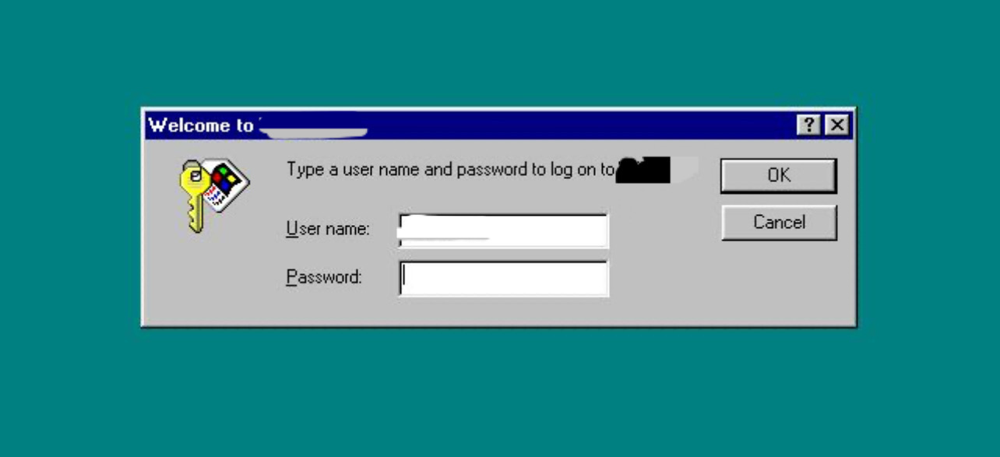

45:00
迷途顯影
Lost in Hong Kong
開始遊戲
⚠️ 請先仔細閱讀說明書才打開任何信封
共五個信封，順序挑戰
倒數計時
限時 45 分鐘
45:00
開始計時
計時開始後將進入登入畫面
📩
信封 #1
請打開第一個信封
🔐 裡面有 Windows 95 登入密碼
準備好後按「繼續」
繼續
🖥️
我的電腦
📁
遊戲檔案
🗑️
資源回收筒
🌐
GitHub

🔐
Welcome to 迷途顯影
?
×
迷途顯影 · 密室逃脫
Type a user name and password to log on to the escape room.
U
ser name:
P
assword:
OK
Cancel
迷途顯影
🔑 密碼在第一個信封
🪟
Start
🔊
--:--
📩
提示
×
📩
📩 請打開信封 #2
📞 撥號電話
輸入號碼
清除
撥打
將手指放入數字孔，順時針旋轉至擋片後放開
📊
花碼 · 香港記憶
花碼被廣泛用於街市、舊式茶餐廳、藥房和公共小巴標價
花碼以簡便的線條作速記，通常分兩行書寫以表示數字與量級
花碼在阿拉伯數字普及後，僅在極少數舊店或招牌可見
第一代小巴價錢牌是以花碼寫成
📩 請打開信封 #3
🔒 破解鐵閘密碼鎖 · 四位數字
_
_
_
_
1
2
3
4
5
6
7
8
9
⌫
0
✓
🔩
通花鐵閘 · 鋪屋情深
通了花便會透光，晚上能從發亮的通花得悉燈還沒關，人還在鋪裡。若有緊急的事，請拍門吧！
以「前舖後居」方式經營的店舖，沒有窗戶，通花鐵閘成為了唯一的通風口
許多店主會將店舖字號或花紋直接鑿在鐵閘上，視為另類廣告
隨時代發展，現代商鋪多用節省空間的捲閘
📩 請打開信封 #4
🚋 電車站等候
07:00
仲有少少時間，同朋友傾吓計啦～
你最喜歡香港嘅邊個地方？
💬 我想再傾多啲
🚃 電車終於到站，按這裏上車！
🎢
舊日足跡
過山車列車設計為綠紫色飛龍
中環街市是香港少數在二戰前建成的室內街市，具有重要的歷史價值
尖沙咀鐘樓內部的響鬧報時裝置在1950年被抽走，歷經71年無聲鐘
過山車最高時速達每小時25公里
📩 請打開信封 #5
🚃 電車站號碼 · 兩位數字 前往中環
_
_
1
2
3
4
5
6
7
8
9
⌫
0
✓
💧
水·難民·香港往事
為節省用水，酒樓派發「水籌」，硬性規定沖茶次數，用完即止
當時政府也採取了關閉公共浴室、暫緩慢性病外科手術及重開舊水井等極端措施
據說水荒時，向人借水跟來討債的人一樣不受歡迎
北漏洞拉，越南與廣播用於宣傳「甄別政策」，告知船民將被扣留並遣返
「樓下閂水喉呀!」
香港曾被稱為「第一收容港」
難民營內常因不同政治背景發生衝突，警隊需將兩派船民分開居住，並常搜出自行製造的武器
🏆
恭喜你成功準時到達比賽現場並成功通關！
📖 請大家閱讀說明書第七頁
📸 通關後可以慢慢欣賞背面嘅相片，
每一張都展現舊香港嘅珍貴景象。
希望你有個好的遊戲體驗！
若你有任何想法或意見，歡迎填寫產品回饋表：
📝 填寫回饋表
🎉
成功！
繼續下一關